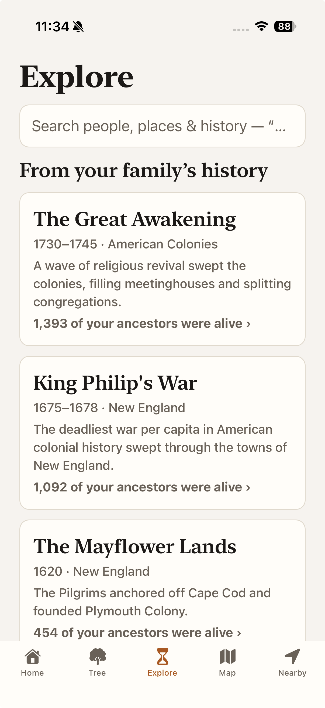
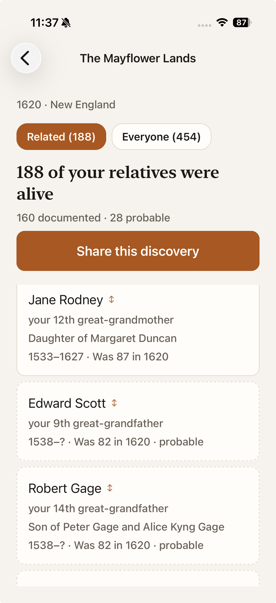

The questions your tree can answer: search over people, places, and history; a shelf of historical moments scored for your family this month; and the doorways into every geographic and structural query.
How you get here: the Explore tab.

1 2Below the shelf sit The Library — the full catalog of questions, century by century, every row already counted against your own tree — and two Ways in: Where your family lived (every state, province, and country in the tree) and Patterns in your family, one door to four findings — where the family began, the moves it made, the oceans it crossed, and the couples who turned out to be kin. The National Archives moved to the Tree tab, where the deciding work lives.
Tapping any event opens the same result anatomy, wherever you came from:

1 2 3 4